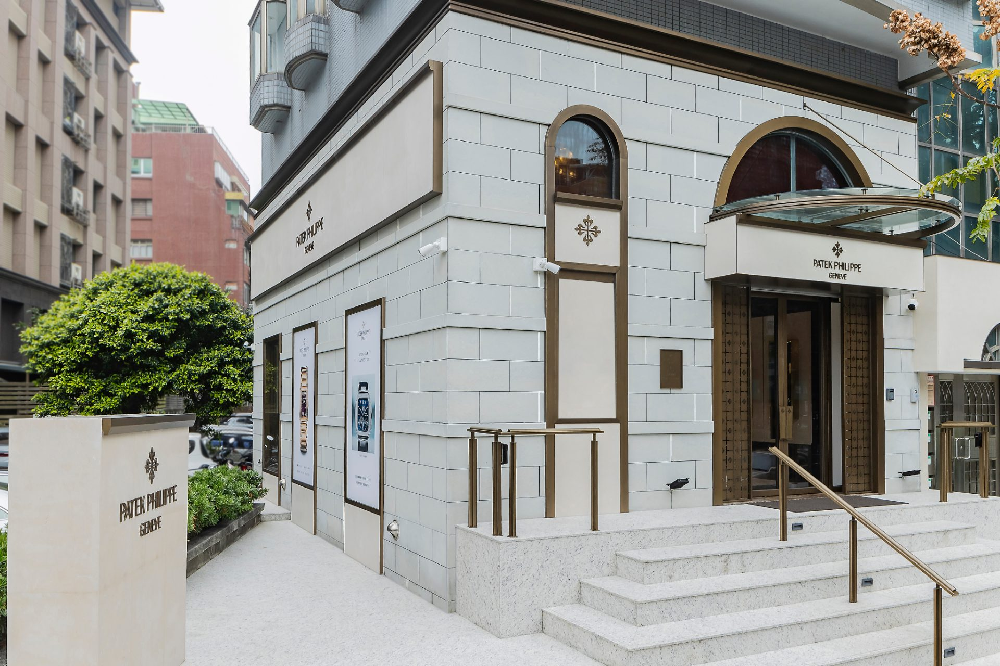
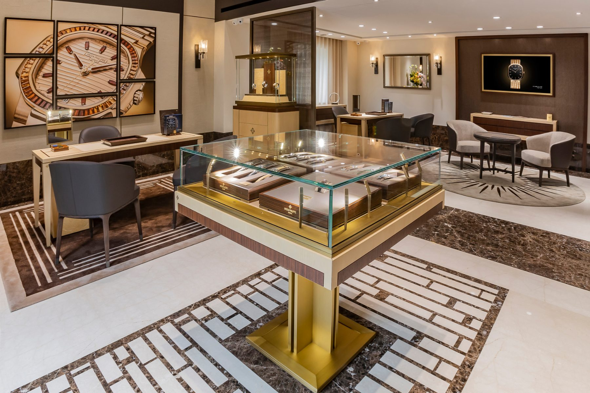

Boutique
永新鐘錶百達翡麗專賣店
聚光燈下的鐘錶城堡
以「稀缺工藝」與「精準美學」，永新百達翡麗專館透過傳承與創新，訴說時間的璀璨永恆。


在時間的長河中，鐘錶不僅是計時工具， 更是藝術、工藝與情感的載體。 永新鐘錶以深厚的技藝底蘊與誠信的經營哲學，成為無數愛錶人士心中的殿堂。
在時間的長河中，鐘錶不僅是計時工具， 更是藝術、工藝與情感的載體。 永新鐘錶以深厚的技藝底蘊與誠信的經營哲學， 成為無數愛錶人士心中的殿堂。